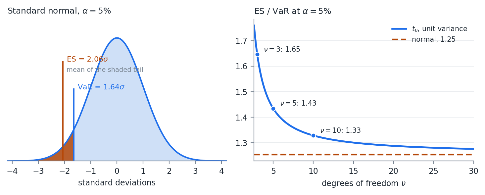
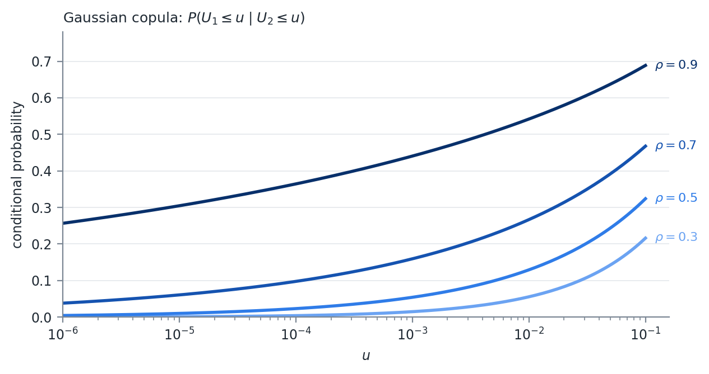
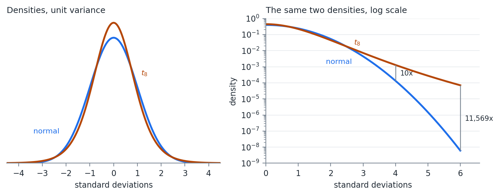

FinTech 545 — Week 05
VaR reads a single point on the loss distribution, so it is blind to everything past that point.
Diversification can move a bad outcome across the threshold and make the reported risk jump.
This week fixes both problems, and then fixes the distributional assumption underneath them.
Expected shortfall is the expected value of profit and loss given the loss is beyond VaR.
ES(X) = E\left( X\ |\ x \leq -VaR(X) \right)
The average of the left tail, where the tail is the values whose CDF is less than or equal to \alpha.
The two conventions get mixed constantly.
The conditional expectation above is a point on the P&L distribution, so it is negative for a loss.
The formula that follows carries a leading minus sign, which reports ES as a positive loss number, the same convention we used for VaR.
Both appear in practice. Pick one, state it, and stay with it.
CVaR is the most widely used alternative, but it can mean different things to different people. Ask for a definition when someone uses it.
From the PDF and VaR:
ES(X) = -\frac{1}{\alpha} \int_{-\infty}^{-VaR(X)} x\, f(x)\, dx
Numerically, given a sample, this is the mean of all values less than or equal to VaR.
Two lines of code, and no more difficult than VaR was.
ES has closed form solutions for many distributions. Most of what we do is simulation based, so we calculate it numerically, but the normal is worth having.
ES_{\alpha}(X) = -\mu + \sigma \frac{f\left( \Phi^{-1}(\alpha) \right)}{\alpha}
f(x) is the standard normal PDF and \Phi^{-1}(\alpha) the standard normal quantile function.
ES for the normal is a linear function of the standard deviation. Just like VaR.
At \alpha = 0.05 the multiplier is f(-1.645)/0.05 = 2.063, against 1.645 for VaR.
Under normality the two measures are the same number scaled by 1.25, and any statement about one is a statement about the other.
That is a statement about the normal, not about the measures.

VaR and ES on a standard normal, and how the gap widens as the tail gets heavier
The left panel is the definition. VaR is where the shading starts. ES is the average of what is inside it.
The right panel is why we bother. For a t scaled to the same variance the ratio rises as the tail gets heavier: 1.33 at \nu = 10, 1.43 at \nu = 5, 1.65 at \nu = 3.
VaR barely moves across that range, because the 5% quantile of a unit variance t is close to the normal’s. ES moves, because it is averaging over the part of the distribution that actually changed.
Coherence is a defined term. Artzner, Delbaen, Eber, and Heath (1999) set out four properties a risk measure q should have, writing losses as positive.
| Property | VaR | ES |
|---|---|---|
| Monotonicity | yes | yes |
| Subadditivity | no | yes |
| Positive homogeneity | yes | yes |
| Translation invariance | yes | yes |
And it is the row from Week 04.
Week 04 gave q(P_1) + q(P_2) = -20 against q(P_1 + P_2) = 80.
Run the same example through ES and the inequality holds, because averaging over the tail sees the 0.16% state where both bonds default.
VaR never looks past the 5% point.
Subadditivity is also what makes the surface convex.
A subadditive and positively homogeneous measure is convex in the portfolio weights, so minimizing ES subject to linear constraints is a convex program with one optimum.
Minimizing VaR is not, and can have many local minima.
Week 07 and Week 08 both build optimizations on this.
It gives a loss expectation instead of a minimum.
It is more sensitive to the tails than VaR. Fatter tails generally mean larger ES, which is not always true for VaR.
The Basel framework moved market risk capital from 99% VaR to 97.5% ES for exactly that reason. The two are close under normality, 2.34\sigma against 2.33\sigma, and they separate when the tail is heavy, which is when the number matters.
There is a real cost, and it is worth knowing before recommending ES to anyone.
ES is harder to validate against realized outcomes.
VaR has a clean test: count the days the loss exceeded it and compare the count to \alpha n.
ES has no equivalent.
Gneiting (2011) showed there is no scoring function whose expected value is minimized by the true ES, which is the property a direct backtest needs.
Fissler and Ziegel (2016) showed that VaR and ES are jointly elicitable, so ES can be backtested alongside VaR but not on its own.
My opinion: use ES for optimization and for reporting the size of a tail loss, and keep VaR in the report as the thing you can actually backtest. The two cost the same to compute once the distribution is simulated.
Often we want to simulate from fitted models instead of just a distribution.
y = f(X, \epsilon)
That requires distributional assumptions on X and \epsilon. The easiest assumption is multivariate normal:
[X\ \epsilon] \sim N(\mu, \Sigma)
If f(X,\epsilon) is OLS, then X and \epsilon are independent and E(\epsilon) = 0.
y = X\beta + \epsilon, \qquad X \sim N\left( \mu_X, \Sigma_X \right), \quad \epsilon \sim N\left( 0, \sigma^2 \right)
[X\ \epsilon] \sim N(\mu, \Sigma), \quad \mu = \begin{bmatrix} \mu_X \\ 0 \end{bmatrix}, \quad \Sigma = \begin{bmatrix} \Sigma_X & 0 \\ 0 & \sigma^2 \end{bmatrix}
\Sigma_X is the m \times m covariance of the regressors and \sigma^2 is the scalar residual variance.
The off diagonal blocks are 0 because assumption 3 of OLS says the regressors are uncorrelated with the error. For two regressors:
\Sigma = \begin{bmatrix} \sigma_{x_1}^2 & \sigma_{x_1 x_2} & 0 \\ \sigma_{x_1 x_2} & \sigma_{x_2}^2 & 0 \\ 0 & 0 & \sigma^2 \end{bmatrix}
This is the Week 03 multivariate draw algorithm with the error term appended to the vector of variables.
From the conditional distributions section of Week 02, given a joint normal on [Y\ X]:
\bar{\mu} = \mu_Y + \Sigma_{YX}\Sigma_{XX}^{-1}\left( a - \mu_X \right), \qquad \bar{\Sigma} = \Sigma_{YY} - \Sigma_{YX}\Sigma_{XX}^{-1}\Sigma_{XY}
\Sigma_{YX}\Sigma_{XX}^{-1} is \hat{\beta} and \bar{\Sigma} is the residual variance.
Fit the regression, simulate the pieces, and you get back the joint normal you could have written down at the start.
It stops being true the moment any piece is not normal.
That is the whole point of the copula.
y_i = f(X, \epsilon_i)\ \ \forall\ i \in [1,n], \qquad \mathcal{E} = \left[ \epsilon_1,\ \epsilon_2,\ \dots,\ \epsilon_n \right]
\mathcal{E} \sim N\left( 0, \Sigma_{\epsilon} \right)
If all X variables are used in each model:
\Sigma = \begin{bmatrix} \Sigma_X & 0 \\ 0 & \Sigma_{\epsilon} \end{bmatrix}
The scalar \sigma^2 has become the n \times n matrix \Sigma_{\epsilon}. The corner blocks are still 0.
\Sigma = \operatorname{cov}\left( [X\ \mathcal{E}] \right) = \begin{bmatrix} \Sigma_X & \Sigma_{X\epsilon} \\ \Sigma_{X\epsilon}' & \Sigma_{\epsilon} \end{bmatrix}
The diagonal elements are the same. The off diagonal elements are no longer necessarily 0.
In practice it is often easier to calculate the covariance than to construct the block diagonal matrix.
Each model was fit separately, and each residual series is uncorrelated with its own regressors by construction.
The residuals of two different models are not uncorrelated with each other.
Two stocks sharing an industry exposure the market factor did not capture will have residuals that move together, and setting \Sigma_{\epsilon} diagonal throws that away.
Week 09 returns to this as the load bearing assumption of a factor model.
A distributional assumption about a variable is a model. Assuming y \sim N\left( \mu, \sigma_{\epsilon}^2 \right):
y = f(X, \epsilon) = \mu + \sigma_{\epsilon} z, \qquad z \sim N(0,1)
There is no X in that model, which is the point.
A variable we assume a distribution for and a variable we regress on three factors both end up as a function of an iid error. The simulation machinery does not distinguish them, and that is what lets the next section mix them freely.
Not all financial data are normally distributed. Some are close enough and others are not.
The problem is specific. Fitting a t to one stock and a normal to another is easy.
Fitting a joint distribution whose first margin is t and whose second is normal is not, because no standard multivariate family has margins from different families.
Everything in Weeks 02 and 03 assumed one \Sigma over one multivariate normal.
Copulas are multivariate cumulative distribution functions whose marginal distributions are uniform on [0,1].
They combine variables with different assumed distributions.
The inverse CDF method from Week 03, run in both directions.
The CDF maps any distribution onto [0,1]. The quantile function maps [0,1] back onto any other.
Between those two steps the marginal distribution has been stripped out, and what remains is the dependence structure alone.
Every multivariate CDF of a random vector X
H\left( x_1,\ \dots,\ x_n \right) = P\left( X_1 \leq x_1,\ \dots,\ X_n \leq x_n \right)
can be expressed in terms of its marginals F_i(x_i) = P(X_i \leq x_i) and some copula C:
H\left( x_1,\ \dots,\ x_n \right) = C\left( F_1\left( x_1 \right),\ \dots,\ F_n\left( x_n \right) \right)
Recognize that F_i(x_i) \in [0,1], and that F_i need not be the same distribution as F_j.
Something stronger than it first appears.
Any joint distribution can be split into margins and a copula, and for continuous margins the split is unique.
So the choice of copula and the choice of margins are two independent modeling decisions.
Getting one right does nothing to protect you from getting the other wrong.
Given a correlation matrix R:
C_R(X) = \Phi_R\left( \Phi^{-1}\left( F_1\left( x_1 \right) \right),\ \dots,\ \Phi^{-1}\left( F_n\left( x_n \right) \right) \right)
\Phi^{-1}(x) is the standard normal quantile function and \Phi_R(X) is the multivariate normal CDF given correlation R.
These are all functions we have worked with, which makes R very simple to fit.
The dependence structure is the one a multivariate normal would have.
The marginal distributions are whatever we fit, and they are not normal.
Use Spearman correlations. We are often dealing with distributions with large outliers, and Spearman is the more robust measure.
r_s = \rho_{R(x),R(y)} = \frac{\operatorname{cov}\left( R(x),R(y) \right)}{\sigma_{R(x)} \sigma_{R(y)}}
Pearson computed on rank vectors.
Because Spearman uses ranks and the quantile function is monotonic, we can calculate Spearman correlations straight from the U matrix.
Ranks survive any monotone transform. F_i is monotone and \Phi^{-1} is monotone, so the ranks of X, of U, and of Z are identical.
A statistic computed from ranks cannot tell them apart. Week 02 made the same point with y = x^3.
On complete data it will be.
Spearman is Pearson computed on rank vectors, and a Pearson matrix built from complete data is PSD by the same argument as any covariance matrix.
Missing data is where that breaks, for Spearman exactly as it did for Pearson in Week 03, and the repairs there apply here unchanged.
Step 2.b is where the fitted marginals come back. The correlated normals in step 1 are a scaffold, and nothing about the final values is normal unless F_i was normal to begin with.
One failure mode worth naming, because it is not obvious and it is not small.
Tail dependence is the probability that one variable is extreme given that another is:
\lambda_L = \lim_{u \to 0^+} P\left( U_1 \leq u\ |\ U_2 \leq u \right)
For the Gaussian copula, \lambda_L = 0 for every \rho < 1.
Far enough into the tail, the variables become independent.
Fit \rho = 0.9 and the model still says that a sufficiently extreme loss in one asset tells you nothing about the other.

The Gaussian curves fall to zero. The t curves level off.
The left panel. At \rho = 0.7, a 5% day in one asset means a 39% chance of a 5% day in the other, which sounds reasonable.
Go to a 0.1% day and it is 16%. Go to a 0.001% day and it is 6%, still falling, on its way to 0.
The right panel is the same picture under the t copula. The curves flatten instead of falling, and the level each one flattens at is a number we will fit.
Depends entirely on what the simulation is for.
It does not change a portfolio’s variance and it barely moves a 5% VaR.
It changes the probability that many positions lose together on the same day, which is the event a risk manager is paid to worry about.
The Gaussian copula took a great deal of blame after 2008, mostly through Li (2000), which used it to price correlated defaults in CDO tranches.
My opinion: the criticism is fair as far as the tail dependence goes and unfair as an explanation of the crisis.
A model that assumes defaults become independent in the extreme is the wrong model for a senior tranche, and that is a real defect. It is not the reason anyone bought the tranche.
Archimedean, including Clayton, Gumbel, and Frank. Built from a generator function rather than from a multivariate distribution, and can be asymmetric between the upper and lower tails.
Vine, which builds a high dimensional dependence structure out of a tree of bivariate ones.
We cover neither. Investigate them on your own if you are going to simulate financial data seriously.
The t copula we do cover, and building it requires the multivariate t first.
The Gaussian copula’s zero tail dependence comes from the multivariate normal that generates it.
Change the generator to a distribution with fat joint tails and the copula inherits fat joint tails instead.
The multivariate t is the smallest such change from what we already have.
X of length n is multivariate t with \nu degrees of freedom, location \mu, and scale matrix \Sigma when
f(X) = c_{\nu,n}\left\lbrack 1 + \frac{1}{\nu}\left( X - \mu \right)'\Sigma^{-1}\left( X - \mu \right) \right\rbrack^{-\frac{\nu + n}{2}}
c_{\nu,n} = \frac{\Gamma\left( \frac{\nu + n}{2} \right)}{\Gamma\left( \frac{\nu}{2} \right)\left( \nu\pi \right)^{n/2}\left| \Sigma \right|^{1/2}}
The bracket is the part that does the work. c_{\nu,n} only makes it integrate to 1.
\Sigma is a scale matrix. For \nu > 2,
\operatorname{cov}(X) = \frac{\nu}{\nu - 2}\Sigma
For \nu \leq 2 the covariance does not exist at all.
Correlations are unaffected either way, since the scaling factor divides out of the numerator and the denominator.
Every margin shares one \nu.
Fit a multivariate t to a set of assets and the fit assigns all of them the same tail thickness, which is rarely what the data says.
That restriction is exactly the one the copula construction removes.
The quadratic form \left( X - \mu \right)'\Sigma^{-1}\left( X - \mu \right) appears in both.
The normal puts it inside an exponential. The t puts it inside a power.
Take one variable with mean 0 and unit variance, so the t carries a scale of s^2 = (\nu - 2)/\nu, and let x grow:
\frac{f_t\left( x \right)}{f_N\left( x \right)} \propto \frac{\left( 1 + \frac{x^2}{\nu s^2} \right)^{-\frac{\nu + 1}{2}}}{e^{-x^2/2}} \sim x^{-\left( \nu + 1 \right)}e^{x^2/2} \rightarrow \infty
The numerator falls like a power of x. The denominator falls like e^{-x^{2}/2}.
Far enough out, the t is arbitrarily more likely than the normal, and that holds for every finite \nu no matter how large.
Far enough out is closer than it sounds.

A standard normal and a t_8, both scaled to unit variance
The left panel is the pair on a linear scale, and they are hard to tell apart. The t is a little taller at the center and a little thinner around one standard deviation. That is the entire visible difference.
The right panel is the same two densities on a log scale, where the normal falls away as a parabola and the t falls close to a straight line.
| Deviation | Normal density | t_8 density | Ratio |
|---|---|---|---|
| 2\sigma | 5.40 \times 10^{-2} | 4.48 \times 10^{-2} | 0.8 |
| 3\sigma | 4.43 \times 10^{-3} | 7.23 \times 10^{-3} | 1.6 |
| 4\sigma | 1.34 \times 10^{-4} | 1.29 \times 10^{-3} | 9.6 |
| 5\sigma | 1.49 \times 10^{-6} | 2.76 \times 10^{-4} | 185 |
| 6\sigma | 6.08 \times 10^{-9} | 7.03 \times 10^{-5} | 11,569 |
Same variance, four orders of magnitude apart at six standard deviations.
Under the normal, a six standard deviation loss or worse arrives about once every four million years of trading days.
Under the t_8 it arrives about once every 65 years.
That is one variable. The multivariate version does the same thing to the joint tail, which is the part we came for.
Week 01 built the Normal Inverse Gaussian as a normal variance mixture. The multivariate t is another one:
X = \mu + \sqrt{W}\ LZ,\ \ \ \ \ W = \frac{\nu}{Q},\ \ \ Q\sim\chi_{\nu}^{2},\ \ \ Z\sim N\left( 0,I \right)
L is the Cholesky root of \Sigma from Week 03.
Draw a standard normal vector, draw one chi-square, scale the entire vector by the same \sqrt{W}, and the result is multivariate t.
One draw of W scales every element of Z at once, so on the draws where W is large every asset is extreme together.
No correlation matrix is doing that work. The common shock is the tail dependence.
Simulating it costs one line more than the multivariate normal simulation in Week 03.
Most packages will draw from a multivariate t directly.
Build the mixture version anyway, simulate from both, and compare the sample covariance, the sample kurtosis, and a few quantiles.
If they agree, use whichever you are more comfortable with. If they disagree, you have found either a bug or a parameterization difference, and the scale matrix is the first place to look.
Full maximum likelihood. Optimize over \mu, \Sigma, and \nu together. The surface is badly behaved because \Sigma and \nu trade off. Shrink \nu, inflate \Sigma, and the likelihood barely moves.
Expectation maximization. The standard method, and it works because of the mixture. Conditional on W the model is a weighted multivariate normal with a closed form. Use a package.
Rank based with a profiled \nu. What we will do. For a copula we need neither \mu nor the scale of \Sigma, only R and \nu.
\tau counts how often two variables agree about which of two observations is the larger one.
Concordant. The observation with the larger x also has the larger y:
\operatorname{sign}\left( x_k - x_l \right) = \operatorname{sign}\left( y_k - y_l \right)
Discordant. The observation with the larger x has the smaller y.
Take any two days out of the sample.
If the day that was better for the first stock was also the better day for the second, that pair of days is concordant.
If the day that was better for the first stock was the worse day for the second, that pair is discordant.
\tau = \frac{\#\text{concordant} - \#\text{discordant}}{\binom{m}{2}}
\binom{m}{2} is the number of pairs available to compare, which puts \tau on the [-1,1] scale we expect.
Every pair concordant gives 1. Every pair discordant gives -1. An even split gives 0.
Only the ordering enters, never the values, so \tau is a rank statistic like Spearman.
Exactness. For any elliptical copula, which includes both the Gaussian and the t,
\rho = \sin\left( \frac{\pi\tau}{2} \right)
\nu appears nowhere in that relation.
Spearman has a matching identity under the Gaussian copula, \rho_S = \frac{6}{\pi}\arcsin(\rho/2), but no closed form under the t.
Estimating R from \tau means estimating it once and handing the same matrix to both models.
Eight observations, listed in increasing order of x:
| Obs | x | y | Rank of y | Concordant | Discordant |
|---|---|---|---|---|---|
| 1 | -2.1 | 0.2 | 4 | 4 | 3 |
| 2 | -1.4 | -0.5 | 3 | 4 | 2 |
| 3 | -0.9 | -1.8 | 1 | 5 | 0 |
| 4 | -0.3 | -1.1 | 2 | 4 | 0 |
| 5 | 0.4 | 1.0 | 6 | 2 | 1 |
| 6 | 0.8 | 0.6 | 5 | 2 | 0 |
| 7 | 1.5 | 2.2 | 8 | 0 | 1 |
| 8 | 2.6 | 1.7 | 7 | 0 | 0 |
| Total | 21 | 7 |
Listing in increasing order of x turns the counting into one comparison instead of two.
For any pair of rows the lower row holds the larger x by construction, so the pair is concordant when the lower row also holds the larger y. The y column is the only one that needs to be read.
The last two columns count each row against the rows below it, which visits every pair exactly once.
Row 1 has rank 4. The seven rows below hold 3, 1, 2, 6, 5, 8, 7. Four are above 4 and three are below, so 4 concordant and 3 discordant.
Row 3 has rank 1, the smallest, so all five rows below hold a larger y. Five concordant, none discordant.
Row 7 has rank 8, the largest, so the single row below it is discordant.
The columns sum to 21 and 7, which is 28 pairs, matching \binom{8}{2}.
\tau = \frac{21 - 7}{28} = 0.5 \qquad \rho = \sin\left( \frac{\pi(0.5)}{2} \right) = \frac{\sqrt{2}}{2} = 0.7071
The two variables agree about the ordering three times as often as they disagree, and under an elliptical copula that implies a correlation of 0.71.
Pearson on the same eight pairs is 0.7116 and Spearman is 0.7381.
The three measures do not have to agree and none of them is wrong.
Only \tau carries an inversion that is exact for the t as well as for the Gaussian.
On complete data, yes, for the same reason the Spearman matrix is.
Write the sample \tau as an average over observation pairs (k,l) of the outer product s^{(kl)}s^{(kl)'}, where s_i^{(kl)} = \operatorname{sign}\left( x_{ik} - x_{il} \right).
Every outer product is PSD and an average of PSD matrices is PSD.
\sin(\pi\tau/2) is applied entry by entry, and an entrywise function of a PSD matrix carries no guarantee of coming back PSD.
On the five assets ahead it does come back PSD, smallest eigenvalue 0.18.
On all one hundred columns of DailyPrices.csv over the same year the \tau matrix has a smallest eigenvalue of 0.050 and the transformed matrix has one of -0.0056.
Check the eigenvalues and repair with the Week 03 methods. Nothing like that could happen with Spearman, which was used directly as R.
\nu is what is left. Hold \mu at the sample mean and R at the rank estimate, and the scales come along for free.
Run the scale relation backwards. At a given \nu, variable i with sample standard deviation \widehat{\sigma}_i must have scale
d_i\left( \nu \right) = \widehat{\sigma}_i\sqrt{\frac{\nu - 2}{\nu}}\ \ \ \ \ \ \ \ \Sigma\left( \nu \right) = D\left( \nu \right)RD\left( \nu \right)
Every parameter of the distribution is now a function of \nu alone.
\ell\left( \nu \right) = \sum_{k = 1}^{m}\ln f\left( x_k;\ \widehat{\mu},\ \Sigma\left( \nu \right),\ \nu \right)
\widehat{\nu} = \underset{\nu}{\arg\max}\ \ell\left( \nu \right)\ \ \ \ \text{subject to}\ \ \ \ 2 < \nu \leq \nu_{\max}
The lower bound keeps the covariance finite.
The upper bound is there because the objective flattens. Past \nu \approx 100 a t and a normal are indistinguishable at any sample size we will have, so the likelihood stops discriminating and an unbounded search wanders.
Search over \theta = 1/\nu on \theta \in [0.01,\ 0.49].
The difference between \nu = 4 and \nu = 5 matters a great deal. The difference between \nu = 40 and \nu = 50 matters almost not at all. Searching in \theta puts the resolution where the first of those lives.
Stop at 0.49 rather than 0.5 to keep \nu off its lower boundary, where d_i(\nu) collapses to zero and \Sigma stops being invertible.
A 200 point grid is cheap, and unlike a scalar optimizer it shows you the shape of the objective.
R is held at the rank estimate and the scales are tied to the sample standard deviations.
The likelihood is being maximized along a one dimensional slice rather than over the whole parameter space.
It is cheap, it is stable, and it is close enough for what we do with it. EM does the joint version when you need the joint version.
Daily returns for SPY, AAPL, MSFT, JPM, and XOM from DailyPrices.csv, 249 observations. Code in fit_multivariate_t.jl.
| Asset | Mean (%) | \widehat{\sigma} (%) | Separate \widehat{\nu} |
|---|---|---|---|
| SPY | 0.100 | 0.780 | 7.74 |
| AAPL | 0.088 | 1.416 | 4.43 |
| MSFT | 0.101 | 1.254 | 11.87 |
| JPM | 0.192 | 1.149 | 4.50 |
| XOM | 0.037 | 1.277 | 22.65 |
| SPY | AAPL | MSFT | JPM | |
|---|---|---|---|---|
| AAPL | 0.595 | |||
| MSFT | 0.721 | 0.492 | ||
| JPM | 0.452 | 0.155 | 0.140 | |
| XOM | 0.105 | -0.043 | -0.159 | 0.307 |
Smallest eigenvalue 0.181, so nothing needs repair.
SPY carries the two largest correlations, which is what you would expect of an index against its own constituents. XOM sits nearly independent of the three technology and financial names.
| \nu | \ell\left( \nu \right) |
|---|---|
| 4 | 4004.6 |
| 6 | 4020.8 |
| 7.8 | 4022.6 |
| 10 | 4021.6 |
| 15 | 4017.1 |
| 20 | 4012.9 |
| 40 | 4002.6 |
The maximum sits at \widehat{\nu} = 7.8, and the curve is flat enough around it that the grid resolution matters more than the optimizer does.
Hold 7.8 against the last column of the moments table.
Fitted one at a time these five series want degrees of freedom from 4.43 to 22.65, a range of five to one. The multivariate t has to answer with a single number, and 7.8 sits closer to the fat tailed names than to XOM.
Every margin is now misdescribed. AAPL and JPM are given thinner tails than they have and XOM is given fatter ones.
That is the reason to want a construction that lets each margin keep its own.
Given R and degrees of freedom \nu:
C_{R,\nu}(X) = t_{R,\nu}\left( t_{\nu}^{- 1}\left( F_1\left( x_1 \right) \right),\ \dots,\ t_{\nu}^{- 1}\left( F_n\left( x_n \right) \right) \right)
t_{\nu}^{-1}(x) is the univariate t quantile function and t_{R,\nu}(X) the multivariate t CDF.
Held against the Gaussian copula, the only change is which quantile function goes in and which joint CDF comes out.
The \nu inside the copula has nothing to do with any \nu fitted to a margin.
A margin can be a normal, a t with four degrees of freedom, or an empirical distribution, and the copula’s \nu still governs the joint tail alone.
Sklar’s theorem is what permits the separation.
As \nu \rightarrow \infty the t copula converges to the Gaussian copula. The Gaussian is the nested special case.
Step 3 needs the copula density.
Differentiating Sklar’s theorem gives the joint density divided by the product of the marginal densities of the transformed variables:
c_{R,\nu}\left( u_1,\ \dots,\ u_n \right) = \frac{f_{R,\nu}\left( t_{\nu}^{- 1}\left( u_1 \right),\ \dots,\ t_{\nu}^{- 1}\left( u_n \right) \right)}{\prod_{i = 1}^{n}f_{\nu}\left( t_{\nu}^{- 1}\left( u_i \right) \right)}
f_{R,\nu} is the multivariate t density with \mu = 0 and \Sigma = R. f_{\nu} is the univariate t density carrying the same \nu.
A comparison against independence.
Independent densities multiply, so the denominator is the joint density the variables would have if nothing linked them. The numerator is the joint density they actually have.
A copula density of 1 everywhere is independence. Above 1 marks the region where the variables turn up together more often than chance. Below 1 marks the region where they avoid each other.
In two dimensions, write f(x,y) = f(y \mid x)f(x) and one marginal cancels:
c\left( u,v \right) = \frac{f\left( x,y \right)}{f(x)f(y)} = \frac{f\left( y \mid x \right)}{f(y)}
The copula density at a point is how much more likely y becomes once you are told x.
\ell\left( \nu \right) = \sum_{k = 1}^{m}\ln c_{R,\nu}\left( u_{k1},\ u_{k2},\ \dots,\ u_{kn} \right)
Do not implement that as written.
The copula density is a ratio holding a product of n densities. Week 02 made the case against forming a product of densities: values sit below 1, and multiplying enough of them underflows to zero before the optimizer sees anything.
The ratio adds a second way to fail, since a denominator that underflows to zero divides as well.
A log of a ratio is a difference and a log of a product is a sum:
\ln c_{R,\nu}\left( u_{k1},\ \dots \right) = \ln f_{R,\nu}\left( y_{k1},\ \dots \right) - \sum_{i = 1}^{n}\ln f_{\nu}\left( y_{ki} \right)
with y_{ki} = t_{\nu}^{-1}\left( u_{ki} \right). Summing over observations:
\ell\left( \nu \right) = \sum_{k = 1}^{m}\ln f_{R,\nu}\left( y_{k1},\ \dots,\ y_{kn} \right) - \sum_{k = 1}^{m}\sum_{i = 1}^{n}\ln f_{\nu}\left( y_{ki} \right)
Two sums of logs, no product or ratio anywhere. Both terms are available as log density functions in any package, so neither density is evaluated on its own scale.
\widehat{\nu} = \underset{\nu}{\arg\max}\ \ell\left( \nu \right)\ \ \ \ \text{subject to}\ \ \ \ 2 < \nu \leq \nu_{\max}
Same bounds, same \theta = 1/\nu substitution, same grid and refinement as the multivariate t.
The objective is the only thing that moved. One evaluation costs a t quantile transform of the whole U matrix and one quadratic form per observation.
Step 2.a uses the copula’s \widehat{\nu}, not the margin’s.
Confusing those two is the most common error in the entire construction, and the simulation still runs when you make it.
\lambda = 2\ t_{\nu + 1}\left( - \sqrt{\frac{\left( \nu + 1 \right)\left( 1 - \rho \right)}{1 + \rho}} \right)
t_{\nu + 1} is the univariate t CDF with one more degree of freedom than the copula.
Positive for every finite \nu and every \rho > -1.
By symmetry the upper tail dependence is the same number, which is itself a modeling assumption and not a fact about markets.
| \rho | \nu = 4 | \nu = 8 | \nu = 16 | \nu = 30 |
|---|---|---|---|---|
| 0.3 | 0.162 | 0.055 | 0.008 | 0.000 |
| 0.5 | 0.253 | 0.117 | 0.029 | 0.003 |
| 0.7 | 0.391 | 0.239 | 0.101 | 0.026 |
| 0.9 | 0.630 | 0.509 | 0.357 | 0.211 |
Every entry is 0 under the Gaussian copula.
Down a column, \lambda tracks correlation, which is unsurprising.
Across a row, \lambda collapses as \nu grows, which is the part that matters.
Fitting \nu is fitting the tail. There is no separate tail dependence parameter to set, and no way to fit the joint tail without committing to a value.
Week 02 answered a question of the same shape with goodness of fit statistics. Two candidate models, one data set, and a criterion that rewards fit and charges for parameters.
AIC, AICc, and BIC are unchanged here. What changes is what we hand them.
Fit the margins first and freeze them. Score only the copula log likelihood, on the same U matrix, for both models.
The Gaussian then has no free parameters left and the t has one, so k_{\text{Gauss}} = 0 and k_t = 1, and BIC collapses to a single line:
\Delta BIC = 2\left( \ell_t - \ell_{\text{Gauss}} \right) - \ln m
Take the t when \Delta BIC is positive.
The two criteria charge different prices for that one extra parameter.
AIC charges 2. BIC charges \ln m, which is 5.52 at m = 249 and keeps growing with the sample. BIC is the harder test, and it gets harder the more data you have.
AICc adds the small sample correction \frac{2k^2 + 2k}{m - k - 1}, which is 0.016 here and vanishes in a large sample. Make AICc the default over plain AIC. It costs nothing when it is unnecessary.
Report both. When they disagree, BIC is saying the extra parameter has not paid for itself at this sample size.
The Gaussian copula was fit earlier with a Spearman matrix. Here both models are given the same R built from Kendall’s \tau.
Handing the two models different correlation matrices would leave the likelihood gap part copula family and part correlation estimate, with no way to separate them.
Compare on \tau, and if the Gaussian wins, then decide between \tau and Spearman for the production fit. The exact inversion there is \rho = 2\sin(\pi\rho_S/6), which returns 0.717 at \rho_S = 0.7.
The Gaussian copula is the t copula at \nu = \infty.
The null sits on the boundary of the parameter space, so the test statistic does not have its usual \chi^2 distribution there.
AICc and BIC need no null distribution.
One caveat. When the margins are empirical rather than fitted parametric distributions, what gets maximized is a pseudo likelihood and the information criteria lose their formal justification. Practitioners use them anyway. Know that you are doing it.
Same five assets, same 249 observations, same R. Each margin is the Student’s t already fitted. Code in choosing_between_copulas.jl.
| Statistic | Gaussian | t |
|---|---|---|
| Log likelihood \ell | 196.41 | 205.58 |
| Free parameters k | 0 | 1 |
| Fitted \widehat{\nu} | – | 16.0 |
| AICc | -392.83 | -409.13 |
| BIC | -392.83 | -405.63 |
\Delta BIC = 2\left( 205.58 - 196.41 \right) - \ln 249 = 18.33 - 5.52 = 12.81
A \Delta BIC above 10 is read as strong evidence.
The t wins here, and it wins on data that is neither a crisis period nor a hand picked pair.
Neither number is wrong, because the two are not estimating the same thing.
The multivariate t uses one \nu for everything, so its estimate is pulled down by margins that are individually fat tailed, AAPL at 4.43 and JPM at 4.50.
The copula has handed those margins off to their own fitted distributions, and what is left for its \nu to describe is the joint tail alone, which is thinner than the individual tails are.
That gap is the argument for the copula in one number. Forcing a single \nu to carry both jobs makes it wrong for both.
The log likelihood is 205.47 at \nu = 14 and 205.35 at \nu = 20, against 205.58 at the maximum.
\widehat{\nu} is weakly identified and a different year of data would move it.
The tail dependence moves with it. At the fitted SPY and MSFT correlation of 0.72, \widehat{\nu} = 16 gives \lambda = 0.12, and \nu = 8 would have given 0.26.
My opinion.
Almost all of the sample sits in the middle of the distribution, so that is what the criterion is scoring. The place the two models actually disagree is the tail where the data is thinnest.
The two errors are not the same size. Choosing the t when the Gaussian was right costs a slightly wider tail in the simulation.
Choosing the Gaussian when the t was right means the simulation never produces the day on which everything falls together.
DailyPrices.csvThe regressions and their residual covariance are model based simulation.
The mixed distributional assumptions, normal for SPY and t for the errors, are what forces a copula.
Simulating the copula and repricing the portfolio is Week 04’s Monte Carlo VaR with a non-normal draw.
Report ES alongside VaR from the same simulated vector, since it costs one more line.
model_based_simulation_with_copulas.jl runs both copulas end to end, and the answer is not the one from the worked comparison.
Five raw return series: the t wins by a \Delta BIC of 12.8.
The regression residuals, with SPY already taken out of every stock: the Gaussian wins by a \Delta BIC of 3.8 at a fitted \widehat{\nu} near 41.
Most of the joint tail behavior in raw equity returns is the market factor.
Take the market out and what is left looks close to Gaussian.
The copula question is never about the data. It is about what is left after the model.